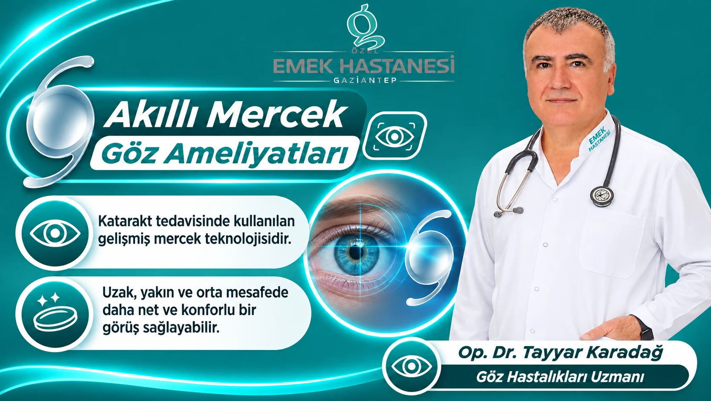

تُعدّ صحة العين من أهم العوامل التي تؤثر مباشرةً في جودة الحياة اليومية. وقد يُصعِّب الساد (المياه البيضاء) وصعوبة الرؤية القريبة، اللذان قد يظهران خصوصًا مع التقدم في السن، الأنشطة اليومية للأشخاص. واليوم، بفضل التطور في تقنيات العدسة داخل العين، تتوفر لدى المرضى المناسبين خيارات علاجية مختلفة تهدف إلى دعم الرؤية على أكثر من مسافة.
ومن هذه الخيارات العدسات داخل العين متعددة البؤر، المعروفة بين الناس باسم العدسة الذكية. ويُخطَّط لهذه العدسات الخاصة، التي يمكن وضعها أثناء جراحة الساد بدلًا من عدسة العين الطبيعية، وفقًا لاحتياجات المريض البصرية.
يلفت قسم طب العيون في مستشفى إيمك الخاص في غازي عنتاب، على لسان د. جرّاح Tayyar Karadağ، الانتباه إلى أهمية الاختيار الصحيح للمريض والفحص التفصيلي للعين في إجراءات العدسة الذكية.
ما هي العدسة الذكية؟
العدسة الذكية هي عدسة داخل العين اصطناعية خاصة، تُوضع داخل العين بعد إزالة عدستها الطبيعية، وهي مصمَّمة لدعم الرؤية على مسافات مختلفة.
وقد تساعد هذه العدسات، المستخدمة خصوصًا في عمليات الساد، بحسب تصميمها البصري، على تلبية الحاجة إلى الرؤية على المسافات البعيدة والمتوسطة والقريبة.
العدسات التي تُسمى «العدسات الذكية» ليست عدسات تعمل بنظام إلكتروني أو رقمي. ويُستخدم هذا الاسم بسبب خصائصها البصرية المتقدمة التي تدعم التركيز على أكثر من مسافة.
ما فائدة العدسة الذكية؟
الهدف الأساسي من العدسات الذكية هو رفع جودة الرؤية من خلال الحلول محل عدسة العين الطبيعية التي فقدت شفافيتها بسبب الساد، والمساعدة، في أنواع العدسات المناسبة، على تقليل الحاجة إلى النظارات.
يمكن تبعًا لتصميم العدسة استهداف المزايا التالية:
- الرؤية على المسافة البعيدة: قد تدعم أنشطة مثل مشاهدة التلفاز، وقيادة السيارة، ورؤية المحيط.
- الرؤية على المسافة المتوسطة: قد توفّر رؤية أكثر راحة أثناء استخدام الحاسوب، وإعداد الطعام، والقيام بالأعمال اليومية.
- الرؤية على المسافة القريبة: قد تقلل الحاجة إلى النظارات في قراءة الكتب، واستخدام الهاتف، والأنشطة التي تتطلب عملًا من قرب.
- تقليل الاعتماد على النظارات: قد تقلل لدى المرضى المناسبين الحاجة إلى استخدام النظارات على مسافات مختلفة.
ومع ذلك، لا يمكن ضمان زوال الحاجة إلى النظارات تمامًا. وقد تختلف نتيجة الرؤية تبعًا لنوع العدسة المستخدمة، وبنية العين، وأمراض العين الموجودة لدى الشخص.
ما هي أنواع العدسة الذكية؟
تُصمَّم تقنيات العدسة داخل العين وفقًا لاحتياجات الرؤية المختلفة. ولا تتشابه العدسات كلها في مبدأ عملها ولا في مدى الرؤية الذي توفره.
العدسات ثلاثية البؤر (Trifocal)
صُمِّمت العدسات ثلاثية البؤر بهدف دعم الرؤية على المسافات البعيدة والمتوسطة والقريبة. ويمكن النظر فيها خصوصًا لدى الأشخاص الذين يرغبون في تقليل الحاجة إلى النظارات على مسافات مختلفة وتكون بنية أعينهم مناسبة.
العدسات متعددة البؤر (Multifocal)
تهدف العدسات متعددة البؤر إلى توفير الرؤية على مسافات مختلفة من خلال توجيه الضوء إلى أكثر من نقطة بؤرية. ويمكن، بحسب التصميم البصري للعدسة، دعم الرؤية على المسافة المتوسطة أيضًا إلى جانب الرؤية القريبة والبعيدة.
عدسات EDOF (ذات عمق البؤرة الممتد)
تهدف عدسات EDOF إلى توفير مدى رؤية أوسع، خصوصًا على المسافتين البعيدة والمتوسطة. وقد تستمر في بعض التصاميم الحاجة إلى نظارات إضافية للرؤية القريبة. وقد تُظهر خصائص مختلفة من حيث انعكاسات الضوء والهالات مقارنةً بالعدسات متعددة البؤر.
العدسات التوريكية (Toric)
تُصمَّم العدسات التوريكية للمساعدة على تصحيح عيب الانكسار الناشئ عن القرنية والمعروف باللابؤرية (الاستجماتيزم). وقد تتوفر أيضًا لدى المرضى المناسبين خيارات من العدسات التوريكية ذات خصائص بؤرية مختلفة.
يُحدَّد نوع العدسة التي ستُستخدم في ضوء قياسات عين الشخص وتوقعاته بشأن الرؤية.
كيف تُجرى عملية العدسة الذكية؟
عملية العدسة الذكية إجراء يُنفَّذ في الغالب ضمن جراحة الساد.
قبل العملية يُجرى فحص تفصيلي للعين. وتُقيَّم عوامل مثل بنية القرنية، وطول العين، وصحة الشبكية والبقعة الصفراء، وضغط العين، واللابؤرية. كما يُتعرَّف على احتياجات الشخص البصرية في حياته اليومية وتوقعاته بشأن استخدام النظارات.
أثناء الجراحة، تُزال عادةً عدسة العين الطبيعية التي فقدت شفافيتها من خلال شق صغير. ثم تُوضع العدسة داخل العين الاصطناعية التي حُددت مسبقًا داخل العين.
يُجرى الإجراء في الغالب بقطرات التخدير أو بطريقة التخدير التي تُعدّ مناسبة. وقد تختلف مدة العملية ومرحلة التعافي بحسب بنية عين المريض والظروف الجراحية.
لمن تناسب عملية العدسة الذكية؟
يمكن النظر في إجراء العدسة الذكية خصوصًا لدى الأشخاص المصابين بالساد، والذين يرغبون في تقليل الحاجة إلى النظارات على مسافات مختلفة باختيار العدسة المناسبة.
غير أن هذه الطريقة ليست مناسبة لكل مريض. وتكتسب العوامل التالية أهمية في اختيار العدسة:
- درجة الساد والحالة العامة لصحة العين
- صحة الشبكية والبقعة الصفراء
- وجود أمراض عين مصاحبة مثل الزرق (المياه الزرقاء)
- بنية القرنية وحالة اللابؤرية
- احتياجات الشخص البصرية في حياته اليومية
- مدى تكرار القيادة ليلًا والحساسية للضوء
- توقعاته بشأن تقليل استخدام النظارات
ينبغي تقييم مدى مناسبة العدسات متعددة البؤر بعناية، خصوصًا لدى الأشخاص المصابين بأمراض الشبكية، أو الزرق المتقدم، أو مشكلات القرنية.
ما هي مزايا عملية العدسة الذكية؟
عند الاختيار الصحيح للمريض، قد تساعد العدسات الذكية على زيادة راحة الرؤية على مسافات مختلفة في الحياة اليومية.
أبرز مزاياها المحتملة هي:
- إمكانية دعم الرؤية على المسافات البعيدة والمتوسطة والقريبة
- إمكانية تقليل الحاجة إلى النظارات لدى المرضى المناسبين
- المساعدة على إزالة تشوش الرؤية الناتج عن الساد
- استهداف زيادة راحة الرؤية في الأنشطة اليومية
- إمكانية تصحيح عيب الانكسار أيضًا بالخيارات التوريكية لدى بعض المرضى المصابين باللابؤرية
وتتوقف درجة هذه المزايا على تصميم العدسة المستخدمة وخصائص عين الشخص.
هل لعملية العدسة الذكية مخاطر؟
تنطوي عملية العدسة الذكية، مثل جراحات العيون الأخرى، على مخاطر معينة. وقد يُلاحظ بعد العملية تشوش مؤقت في الرؤية، وإحساس بالوخز في العين، وحساسية للضوء، وجفاف.
قد يلاحظ بعض المرضى، خصوصًا مع العدسات متعددة البؤر، حلقات حول الأضواء ليلًا (halo)، أو تشتتًا للضوء، أو وهجًا. كما أن انخفاض حساسية التباين حالة قد تُلاحظ في بعض تصاميم العدسات.
أما العدوى، والنزيف داخل العين، والمشكلات المتعلقة بالشبكية، وتغيرات الضغط داخل العين، فهي من مضاعفات جراحة الساد الأشد خطورة ولكن الأقل شيوعًا.
لذلك ينبغي أن يشرح طبيب العيون الفوائد والمخاطر المحتملة بالتفصيل قبل العملية.
مرحلة التعافي بعد عملية العدسة الذكية
قد يختلف اتضاح الرؤية بعد العملية من شخص إلى آخر. فبينما تتحسن الرؤية بوضوح في وقت قصير لدى بعض المرضى، قد تطول مرحلة التكيّف والتعافي لدى أشخاص آخرين.
خلال فترة التعافي:
- ينبغي استخدام قطرات العين التي يصفها الطبيب بانتظام.
- ينبغي عدم فرك العين وحمايتها من الصدمات.
- ينبغي عدم التخلف عن فحوصات المتابعة.
- ينبغي تجنب الأنشطة البدنية الشاقة طوال المدة التي يوصي بها الطبيب.
- عند ظهور أعراض مثل الفقدان المفاجئ للرؤية، أو الألم الشديد، أو الاحمرار الواضح، أو ومضات الضوء، ينبغي مراجعة طبيب العيون دون إضاعة الوقت.
تُعدّ العناية والمراجعات بعد العملية مهمة لنجاح مرحلة التعافي.
هل يمكن تطبيق العدسة الذكية لكل مريض بالساد؟
لا. قد لا تكون العدسات الذكية الخيار الأصح لكل مريض بالساد. وقد تكون العدسات القياسية أحادية البؤرة خيارًا أنسب لدى بعض المرضى.
فعلى سبيل المثال، ينبغي اختيار العدسة بعناية أكبر لدى الأشخاص المصابين بمرض في الشبكية أو البقعة الصفراء، أو الذين لديهم تلف واضح في العصب البصري، أو الذين ترتفع حساسيتهم لانعكاسات الضوء ليلًا.
والمهم هنا ليس تقليل الحاجة إلى استخدام النظارات فحسب، بل تحديد العدسة الأنسب لصحة عين الشخص ونمط حياته.
تقييم متخصص لصحة عيونكم في مستشفى إيمك الخاص
لتحقيق نتيجة ناجحة في إجراءات العدسة الذكية، يكتسب الفحص التفصيلي للعين، والقياسات الصحيحة، واختيار العدسة الخاص بكل شخص أهمية كبيرة.
في قسم طب العيون بمستشفى إيمك الخاص في غازي عنتاب، تُقيَّم لدى د. جرّاح Tayyar Karadağ احتياجات المرضى فيما يخص الساد وخيارات العدسة داخل العين، بما يساعد على تحديد النهج العلاجي المناسب.
للحصول على معلومات حول صحة عيونكم واحتياجاتكم البصرية، ولمعرفة ما إذا كان إجراء العدسة الذكية مناسبًا لكم، يمكنكم حجز موعد في قسم طب العيون.